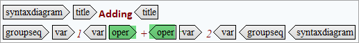

Programming domain elements
The elements in the programming domain each have a specific semantic purpose.
Here is a list of elements, their semantic purposes, and an example for each.
- apiname
- API name
Example:Google Maps
- codeblock
- code blockExample:
dir /s/w/o/p/a:-d - codeph
- code phrase
Example:
dir read *.*lists all files in the current directory that begin with read with any extension. - option
- one of a set of options
Example: Topic can be a concept, or a task, or a reference. Let's prefer task option here.
- parmname
- parameter or argument
Example: Use the env parameter of the "config" command to update to update a field value.
- parml
- parameter listExample:
- parameter_1
- This is the first parameter in the parameter list.
- parameter_2
- This is the second parameter in the parameter list.

- plentry
- parameter list entry (within parml)Example:
- parameter_1
- This is a parameter entry.

- pt
- parameter term (within plentry)Example:
- parameter_1
- This is the parameter term.

- pd
- parameter definitionExample:
- paramter_1
- This is the parameter definition.

- synph
- syntax phrase. It is used when a complete syntax diagram is not required, but
some of the syntax elements, such as
<kwd><oper><delim>are used within the text flow of the topic content.Example: formatvolumename Here's how this tag can be used:
- syntaxdiagram
- syntax diagramExample:Here's how this tag can be used:
This is the element container for syntax elements.

- groupseq
- group of syntactic units (used only for syntax diagrams)Example:Here's how this tag can be used:

- groupchoice
- choice of a group of syntactic units (used only for syntax diagrams)Example:{ var1 -name }Here's how this tag can be used:

- groupcomp
- group of composite syntactic units (used only for syntax diagrams)Example:v1Here's how this tag can be used:

- fragment
- fragment of syntax (used only for syntax diagrams)
- fragref
- cross-reference to a fragment of syntax diagram
- synblk
- block of small pieces of a syntax definition into a larger piece.Example:v1variable_nameHere's how this tag can be used:

- synnote
- footnote within syntax (syntax note). Use it to explain aspects of the syntax that cannot be expressed in the markup itself.
- synnoteref
- cross-reference to a syntax note
- kwd
- syntax keyword (used only for syntax diagrams)Example:Here's how this tag can be used:
CopyFile
COPYF
- var
- variable that a user must supply, such as their user name or password (used only
for syntax diagrams)Example:{ input-filename }Here's how this tag can be used:

- oper
- operator character (such as +, -, and =) within syntaxExample:Here's how this tag can be used:
Adding
1 + 2
 - delim
- delimiter characters (such as /, |, and ;) to mark the beginning or end of a
section within a syntax diagram.Example:one | two | threeHere's how this tag can be used:

- sep
- seperator character within syntaxExample:1 + ( 2 * 3 ) = 7Here's how this tag can be used:

- repsep
- seperator character for repeated syntax elementsExample:{ | This | That | The other }Here's how this tag can be used:


1 xyz
2 My first syntax note